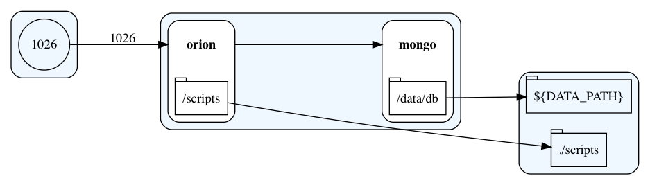

Simple Scenario
Introduction
This simple recipe triggers an Orion Context Broker instance backed with a MongoDB instance.
Both services will be running in docker containers, defined in the simple/docker-compose.yml file.
Data will be persisted, by default, in a local folder called data. However, this can changed by editing the value of DATA_PATH variable in the .env file.

How to use
Optionally, you can modify .env file (or even docker-compose.yml) according to your needs. Then simply run:
$ docker-compose up -d
How to validate
Simply run the following command:
$ curl localhost:1026/version
It should return something like:
{
"orion" : {
"version" : "1.6.0-next",
"uptime" : "0 d, 0 h, 5 m, 24 s",
"git_hash" : "61be6c26c59469621a664d7aeb1490d6363cad38",
"compile_time" : "Tue Jan 24 10:52:30 UTC 2017",
"compiled_by" : "root",
"compiled_in" : "b99744612d0b"
}
}